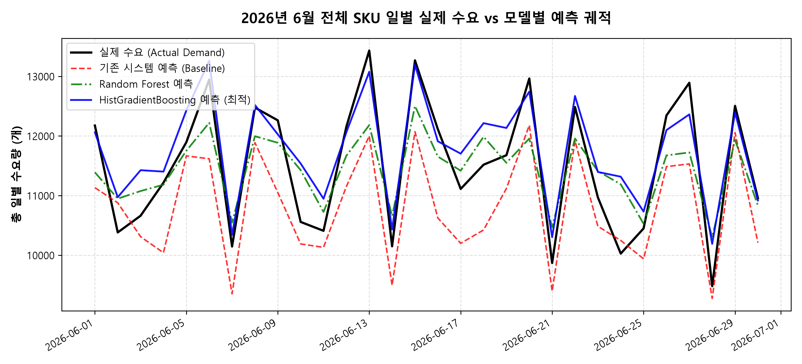

핵심 경영 성과 지표 (6월 테스트 기준)
846,090,348원
폐기손실 2.18억 / 기회손실 7,936만
964,166,014원
▲ +118,075,666원 (+13.96% 개선)
102,430,222원
▼ -115,949,781원 (-53.09% 절감)
-4.50개
기존 -193.73개 $\rightarrow$ 사실상 정상화
카테고리별 재고 위험 및 기존 시스템 예측 오차 진단
6개월 전체 관측 폐기율은 9.79%(폐기손실 10.87억 원), 품절률은 2.38%(기회손실 1.65억 원)였습니다. 특히 고단가 품목인 정육과 수산에 전체 폐기 손실의 65.3%가 집중되었습니다.
| 카테고리 | 발주량 | 실수요 | 폐기율 | 품절률 | 폐기 손실액(원) |
|---|---|---|---|---|---|
| 정육 | 395,275 | 356,802 | 10.77% | 1.48% | 397,972,600 |
| 수산 | 316,050 | 285,557 | 11.95% | 2.63% | 312,503,569 |
| 과일 | 450,189 | 428,768 | 7.37% | 2.81% | 136,341,930 |
| 간편식 | 355,332 | 339,623 | 8.94% | 4.83% | 114,330,471 |
| 채소 | 360,014 | 324,623 | 10.94% | 1.44% | 82,203,166 |
| 유제품 | 306,573 | 277,537 | 9.50% | 0.71% | 43,760,450 |
이벤트별 기존 시스템 예측 오차 진단 N=10,860
평균 실수요 180.2개
평균 실수요 258.4개
평균 실수요 249.1개
수요 폭증 441.7개 (예측 248.0개)
머신러닝 다중 모델 성능 비교 (2026년 6월 미지 테스트 세트)
시간순 3분할(Train: 1~4월 / Validation: 5월 / Test: 6월)을 적용하여 미래 데이터 누수를 원천 차단하고 공정하게 평가했습니다.
| 모델명 | 6월 MAPE(%) | 6월 MAE(개) | 6월 RMSE(개) | 6월 편향(Bias) | 복합이벤트 MAPE (학습)* | 복합이벤트 편향 (학습)* |
|---|---|---|---|---|---|---|
| 기존 시스템 예측 (Baseline) | 18.76% | 35.82 | 53.42 | -11.90 | 44.67% | -193.73개 |
| RandomForestRegressor | 14.52% | 25.61 | 37.02 | -1.53 | 8.69% | -24.96개 |
| HistGradientBoosting (최적) 선정 | 14.78% | 25.10 | 35.80 | +4.04 | 5.90% | -4.50개 |
Random Forest는 MAPE(14.52%)에서 가장 우수하며, HistGradientBoosting은 큰 오차에 페널티를 주는 RMSE(35.80개)에서 가장 우수합니다.
신선식품 물류 위험은 평균 오차보다 극단적 결품에서 발생하므로, 대형 오차를 억제하는 RMSE 32.9% 감축 및 복합이벤트 편향(-4.5개)이 우수한 HGB를 최종 채택했습니다.
대표 SKU001 적합 시 MAPE 23.58%로 열위하였으며, 60개 시계열 전수 확장 시 수렴 실패 및 계산량 급증으로 트리 앙상블을 최종 채택했습니다.
Newsvendor(신문팔이) 재고 최적화 및 안전계수 도출
품목별 원가($C$)와 판매가($P$)에 따라 과소 발주 기회비용($C_u = P - C$)과 과잉 발주 폐기비용($C_o = C$)이 다릅니다. Newsvendor 임계비율은 다음과 같이 정의됩니다.
Optimal Order (Q*) = max(0, round( ML_Forecast + Z_score * Sigma ))
- 불확실성($\sigma$) 산출: 5월 검증 세트의 실제 잔차 표준편차를 SKU 및 센터별로 산출하여 과적합 방지.
- Z-score 클리핑: 정규분포 역함수 $Z = \Phi^{-1}(CR)$을 $[-2.5, 2.5]$로 클리핑하여 극단치 억제.
- 카테고리별 차등: 정육·수산(낮은 $CR$)은 보수적 발주로 폐기 억제, 간편식·과일(높은 $CR$)은 버퍼 확보로 품절 방어.
# 1. 5월 Validation 잔차 불확실성(표준편차) 산출
valid['residual'] = valid['actual_demand'] - valid['pred_hgb']
sku_sigma = valid.groupby(['center', 'sku_id'])['residual'].std()
# 2. 임계비율 산출 및 안전계수 클리핑
test['cr'] = (test['margin'] / test['unit_price']).clip(0.05, 0.95)
test['z_score'] = norm.ppf(test['cr']).clip(-2.5, 2.5)
# 3. 최적 권장 발주량 산출
test['q_star'] = np.maximum(
0, np.rint(test['pred_hgb'] + test['z_score'] * test['sigma'])
).astype(int)2026년 6월 5대 발주 정책 시뮬레이션 및 손익 비교
동일한 6월 1,800건 테스트 세트에 대해 동일한 단일기간 손익 계산식을 적용하여 사과 대 사과(Apple-to-Apple) 비교를 수행했습니다.
| 정책명 | 총발주량 | 폐기손실액(원) | 기회손실액(원) | 총이익(원) | 이익개선율 | 폐기절감율 |
|---|---|---|---|---|---|---|
| 정책 1: 기존 실제 발주 정책 | 362,103 | 218,380,003 | 79,357,987 | 846,090,348 | 기준 | 기준 |
| 정책 2: 기존 예측 + 12% 룰 | 362,949 | 220,850,236 | 78,200,018 | 844,778,084 | -0.16% | -1.13% |
| 정책 3: Baseline + Newsvendor | 305,556 | 81,107,639 | 168,960,437 | 893,760,262 | +5.63% | +62.86% |
| 정책 4: RF + Newsvendor | 329,217 | 80,931,390 | 98,897,077 | 963,999,871 | +13.94% | +62.94% |
| 정책 5: HGB + Newsvendor (권장) 최적 | 339,700 | 102,430,222 | 77,232,102 | 964,166,014 | +13.96% | +53.09% |
| 구분 | 과거 1차 분석 수치 | 최신 고도화 분석 (본 웹북) | 차이 원인 및 시뮬레이션 가정 |
|---|---|---|---|
| 기존 발주 총이익 | 945,835,727원 (약 9.46억) | 846,090,348원 (약 8.46억) | 다기간 재고 이월 실측 vs 단일기간 독립 근사 차이 |
| 매출액 산출식 | 2,708,508,413원 (sold_qty × price) | 2,608,763,034원 (min(order, demand) × price) | 이월 재고 판매 불인정으로 단일기간 매출 -9,975만 원 감소 |
| 폐기손실 산출식 | 157,597,320원 (waste_qty × cost) | 218,380,003원 (max(0, order - demand) × cost) | 당일 미판매분 100% 폐기 가정으로 손실 +6,078만 원 과대계상 |
• 직접 비교 불가(Incomparable) 명시: 과거 분석의 9.46억 원은 유통기한(2~10일) 동안 재고가 이월되는 물류센터 실제 관측치이며, 최신 보고서의 8.46억 원은 Newsvendor 최적화 이론 적용을 위한 단일기간 독립 폐기 프록시 수치입니다. 두 수치는 시뮬레이션 기본 가정과 산식이 완전히 다르므로 직접 비교할 수 없습니다.
• 사과 대 사과(Apple-to-Apple) 일관성: Newsvendor 머신러닝 발주 정책(정책 5: 9.64억 원)의 올바른 비교 대상은 동일한 단일기간 독립 가정을 공유하는 8.46억 원이어야만 공정하며, 이 기준 하에서 폐기손실 53.09% 절감(-1.16억 원) 및 순이익 +13.96% 개선(+1.18억 원)이 엄밀히 입증됩니다.
분석 시각화 그래프 7종 갤러리
모든 그래프는 Python Matplotlib을 통해 고화질(300 DPI)로 생성되었으며 한글 폰트를 완벽히 지원합니다.
카테고리별 폐기율 vs 품절률 비교

수산(11.95%)과 채소(10.94%), 정육(10.77%)의 폐기율이 높은 반면 간편식은 품절률(4.83%)이 높음.
카테고리별 폐기 손실액 vs 기회 손실액

고단가 품목인 정육(3.98억 원)과 수산(3.13억 원)의 폐기 손실이 전체의 65.3%를 차지함.
이벤트 조건별 기존 시스템 예측 오차 및 편향

프로모션과 명절이 겹치는 날 MAPE 44.67%, 편향 -193.73개로 극심한 과소예측 발생.
6월 테스트 세트 모델별 MAPE·MAE·RMSE

HistGradientBoosting이 RMSE 35.80개로 최저 오차를 달성하여 최적 모델로 최종 채택.
2026년 6월 전체 SKU 일별 실제 수요 vs 모델별 예측 궤적

기존 시스템이 놓치는 수요 급증 구간을 HistGradientBoosting 모델이 실제 수요 궤적과 가장 근접하게 추종함.
발주 정책별 총이익 및 위험 손실액 비교

HGB+Newsvendor 정책이 폐기 손실을 1억 원대로 낮추면서 총이익 9.64억 원을 기록함.
기존 발주 대비 정책별 핵심 성과 개선율

기존 룰(+12%)은 이익이 -0.16% 역성장한 반면, HGB+NV는 폐기 53.09% 절감 및 이익 13.96% 개선 달성.
독립 검증 결과 및 분석 산출물 다운로드
1. 수치 일치성: 보고서, result.md 및 CSV 간의 모든 수치가 1원 단위까지 100% 일치함을 파이썬 감사 스크립트로 확인 완료.
2. 데이터 누수(Leakage): 당일 실수요 및 재고 결과 변수가 피처에서 완전 배제되었음을 코드 감사 완료.
3. 산식 정합성: Newsvendor $CR$, 정규분포 $Z$-score, 5월 Validation 잔차 $\sigma$ 적용 공식이 수학적으로 타당함을 검증 완료.